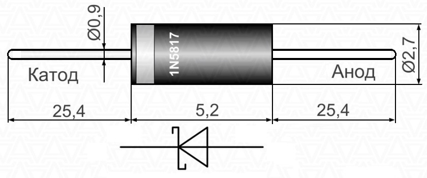

Диоды Шоттки 1N5817, 1N5818, 1N5819
Диоды Шоттки 1N5817, 1N5818, 1N5819 – полупроводниковое устройство, обладающее низким падением напряжения при прямом включении. Барьером Шоттки служит металл-полупроводниковый переход, пропускающий электрическую цепь только в одном направлении. К основным преимуществам диодов Шоттки 1N5817, 1N5818, 1N5819 следует отнести уменьшенное прямое падение напряжения (в сравнении с обычными диодами) и высокое быстродействие, что объясняется отсутствием инжекционной диффузии неосновных носителей заряда.
Применяются диоды Шоттки 1N5817, 1N5818, 1N5819 в интегральной микроэлектронике (шунтируют переходы транзисторов), в импульсных высокочастотных выпрямителях, импульсных блоках питания аналоговой и цифровой аппаратуры, зарядных устройствах батарей, конверторах, детекторах нейтронного излучения, при сборке солнечных батарей, а также в качестве приёмников альфа и бета излучения.
{kind=link}

Рис. 1 - Внешний вид и размеры диода 1N5817 (1N5818, 1N5819)
Цилиндрический корпус диодов DO-41 выполнен из литого пластика. На торцах корпуса размещены луженые вывода аксиального проволочного типа, полярные. Катодный вывод обозначается на корпусе круговой полоской. Также на корпусе указана краткая маркировка диода, выполненная нанесением краски.
1N589
1N581 - Серия диода Шоттки
9 - Номинал диода Шоттки: 7, 8, 9.
Установка диодов Шоттки 1N5817, 1N5818, 1N5819 осуществляется с помощью пайки непосредственно в сквозные отверстия печатной платы. Предельная температура процесса пайки (время до 10 с) – не выше +250°С.
| Параметр | 1N5817 | 1N5818 | 1N5819 |
|---|---|---|---|
| Максимальное обратное напряжение | 20 В | 30 В | 40 В |
| Максимальное прямое напряжение | 0,45 В | 0,55 В | 0,6 В |
| Средний прямой ток | 1 А | ||
| Пиковый прямой импульсный ток | 25 А | ||
| Максимальный обратный ток | 1 мА | ||
| Рабочая температура | -65°С – +150°С | ||
| Масса | 0,34 г | ||
Аналоги 1N5819
- 11DQ04
- 1N5819G
- SD1004